Bei der Behandlung des mNSCLC,
Was bringt das Gesamtüberleben aus der Balance?
Trotz therapeutischer Fortschritte sehen sich Onkolog:innen weiterhin mit einem Ungleichgewicht zwischen zusätzlichen Toxizitäten systemischer Behandlungen und einer verlängerten Überlebenszeit bei Patient:innen mit metastasierendem NSCLC konfrontiert.1,2
Im Verlauf der Krankheitsprogression fehlt die Möglichkeit das Gesamtüberleben ohne zusätzliche systemische Toxizitäten zu verlängern
FOLGEN FÜR PATIENT:INNEN
Die Behandlungsoptionen beim metastasierenden NSCLC sind derzeit auf biochemische systemische Therapiemodalitäten beschränkt, dies limitiert ggf. das mediane Gesamtüberleben, vor allem in späteren Therapielinien.3,4
Die Therapiewahl kann zudem durch folgende Faktoren erschwert sein:
Die Belastung durch Toxizitäten der aktuellen systemischen Therapie6,7
Alter und Fitness der Patient:innen für das Fortführen der Behandlung8,9
Ungefähr die Hälfte aller Patient:innen, die eine Behandlung für das metastasierende NSCLC erhalten, erfahren eine Verschlechterung ihrer physischen Funktion. Dies beeinträchtigt Alltagsaktivitäten und wirkt sich auf das allgemeine Wohlbefinden aus.10,†

Zudem schließen NSCLC-Studien, die die Wirkung von Chemotherapieregimen auf Verträglichkeit und Lebensqualität untersuchen, typischerweise keine toxizitätsbedingten Abbruchraten mit ein. Bei Patient:innen, die eine Kombinationstherapie erhalten, können diese jedoch mehr als 30% betragen.12,13
WIR MÜSSEN
neue Therapiemodalitäten in Betracht ziehen, die auf innovative Art auf Tumoren einwirken, um das Gesamtüberleben ohne zusätzliche systemische Toxizitäten zu verlängern.
REGISTRIEREN, UM UPDATES UND INFORMATIONEN ZU ERHALTEN
*Kennzeichnet notwendiges Feld.